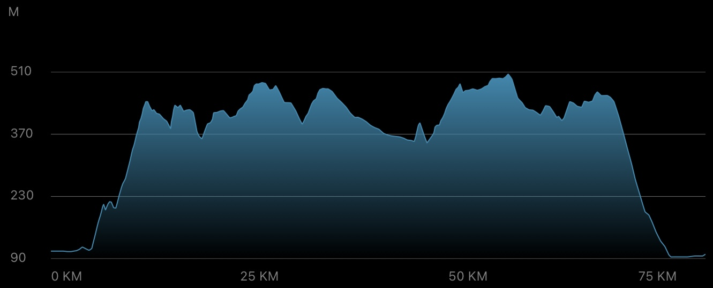
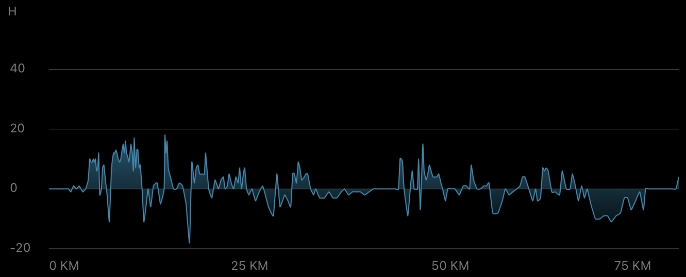
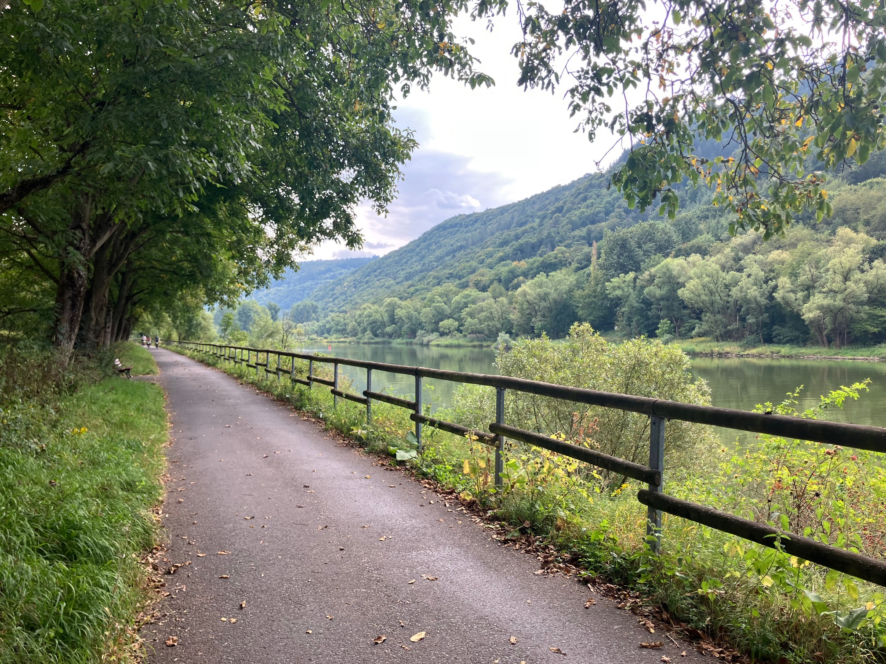
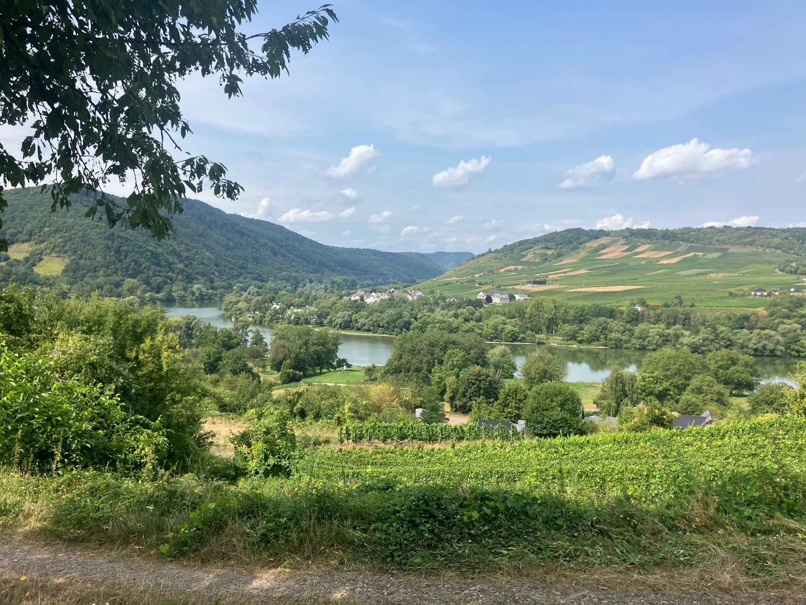
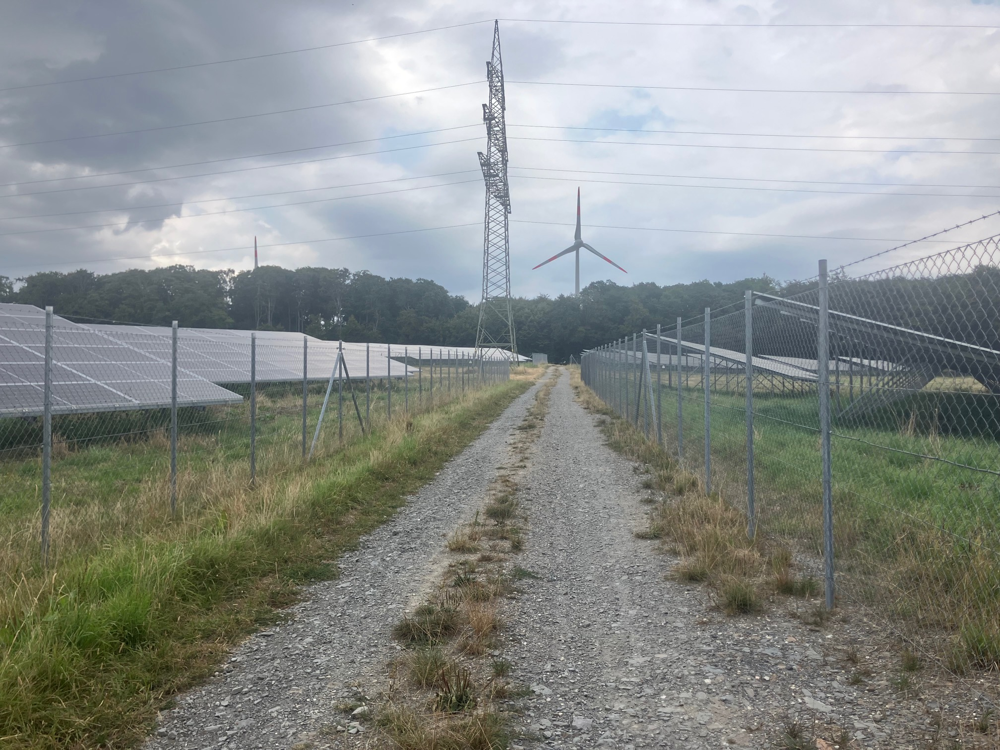
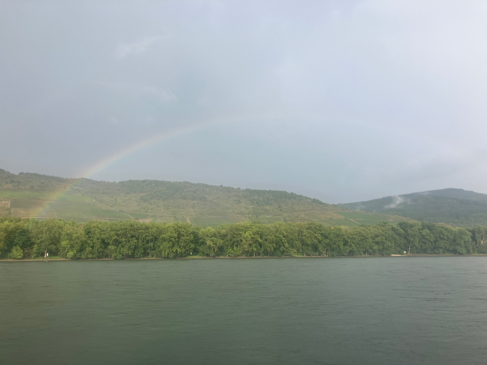

Daily Stats*
| Distance |
78.77 km |
| Time |
4:54:15 h |
| Avg. Speed |
16.1 km/h |
| Max. Speed |
40.3 km/h |
| Avg. Heart Rate |
135 bpm |
| Uphill |
1106 m |
| Downhill |
1106 m |
| Avg. Temperature** |
25.0 °C |

Elevation profile [m]

Slope profile [%]
*measured by Garmin Forerunner 945 & Sigma ROX 4.0
**measured at the lower back
Daybook
Today's route went from Edinger-Eller on the Moselle to Trechtingshausen on the Rhine. It's a medium-distance ride of just under 80 km, but with another 1,000 meters of elevation gain, making it the final “trial by fire” on this tour before the leftover days run more or less flat.
Getting up was relatively difficult for me today, as my legs had to carry extra weight after the last two stages. However, since I didn't have to leave my accommodation until noon, I was free to take my time and started the day's tour in the early afternoon. From Edinger-Eller, I first cycled a few kilometers along the Moselle under cloudy skies (see first impression), past Nehren and close to Senhals, where I crossed the Senheim Moselle bridge to the other riverside. From there, a lengthy and steep path over the Hochkessel (one of the highest mountains in the central Moselle valley with a height of 421 m) lay ahead. It started off pleasantly while the sun came out, surrounded by vineyards and with a moderate incline (see second impression), but gradually developed into a very challenging mountain climb. For some reason, my navigation device once again showed a nonexistent path, so I had to ask a local and cycle around the mountain on difficult terrain (unpaved, uneven, gravelly, with gradients of up to 18%). This was super hard work and took a lot of concentration to keep the bike under control. The sparse signage at crossroads didn't help either, and so it took me about an hour to reach Genderich on the other side of the mountain after a 9 km ride uphill!
The next part can be described as an up-and-down journey from one village to the next (Moritzheim, Hesweiler, Blankenrath, Haserich, etc.). Behind Haserich, I saw a flock of ravens and two birds of prey flying directly above my head, clearly good at handling the thermals. I also passed a battalion of solar panels (see third impression). Boy, the electrical boxes on these things make really high-pitched noises, so I didn't want to stop there ;-)
The route then progressed via Leideneck and past Kastel, still with a significant amount of forest (edge) and therefore rough terrain. I was so happy when, after almost 34 kilometers and two and a half hours of cycling, I reached the Schinderhannes Cycle Route near Bell. Very much like the Ruwer-Hochwald Cycle Route and the RAVeL, this is a smooth, asphalted, fast transit path with very gentle gradients, interrupted only by regular crossings of traffic roads. Anyway, I “flew” past Hasselbach, Alterkülz, and other places on this bike path until I finally had to turn off (reluctantly) toward Kümbdchen.
Next step was then the Rhine-Hunsrück district town of Simmern, which appears to be located in the valley, because once again I went downhill into the city and uphill out of it ... I struggled along dirt tracks and country roads through Riesweiler, Argenthal, and Ellern until I arrived in Rheinböllen. At this point, I was basically glad to have the off-road climbs behind me, but I was already expecting a change in the weather to rain. It wasn't long in coming; shortly after shopping for food and drinks in Rheinböllen, it started to drizzle.
What happened then was a total water fight for the last 15 km. After riding across the open field where the rain suddenly got way heavier, I was already soaked through, so I decided to keep going without any stops. You can imagine that the wind was pretty strong at about 500 meters above sea level and on unprotected terrain, so every raindrop hit my skin like an arrow, while the wind cooled me down. Between Kammerwegberg and Ohligsberg, the final descent of about 5 km began, leading through Oberheimbach to Niederheimbach and the Rhine River. This should have been the crowning glory of the day, but under the circumstances, I sat on my bike like a sponge, with completely soaked clothes and totally chilled — well, you hardly move on your bike during downhill stretches, except to operate the brakes ...
In the end, my suffering was somewhat compensated for once I reached the banks of the Rhine, as the clouds cleared slightly, the sun shone through, and a spectacular rainbow formed on the opposite side of the river (see fourth impression). I quickly completed the final 4 km to Trechtingshausen, and oh my goodness, was I glad to take off my sports clothes and take a shower :-)
This leg completes the triad of challenging routes around the Eifel region. Today, it was particularly noteworthy that around 90% of the trails were difficult to navigate, which, combined with another 1,000 meters of uphill climbing, stylized into a real test of endurance. At least I can say that I had a really wet rain experience on this trip. Guess I see the bright side now that it's over :-)
Impressions

Beautiful bike path along the Moselle between Ediger-Eller and Nehren

View of the Moselle's mid-loop from the foot of the Hochkessel

Between the solar panels on a gravel path near Haserich

Rainbow over the Rhine near Trechtingshausen